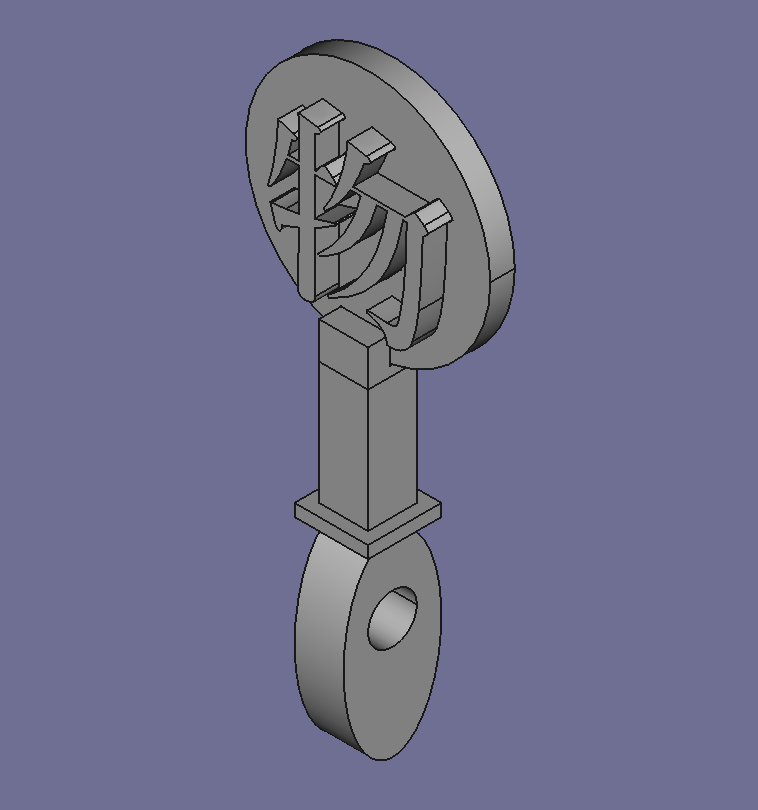
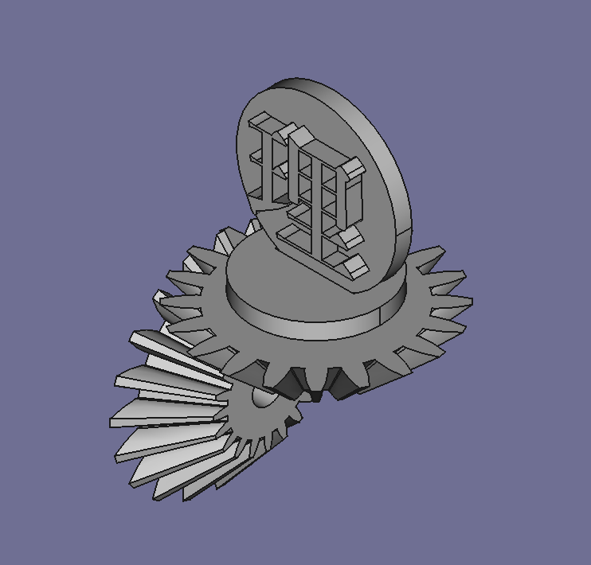
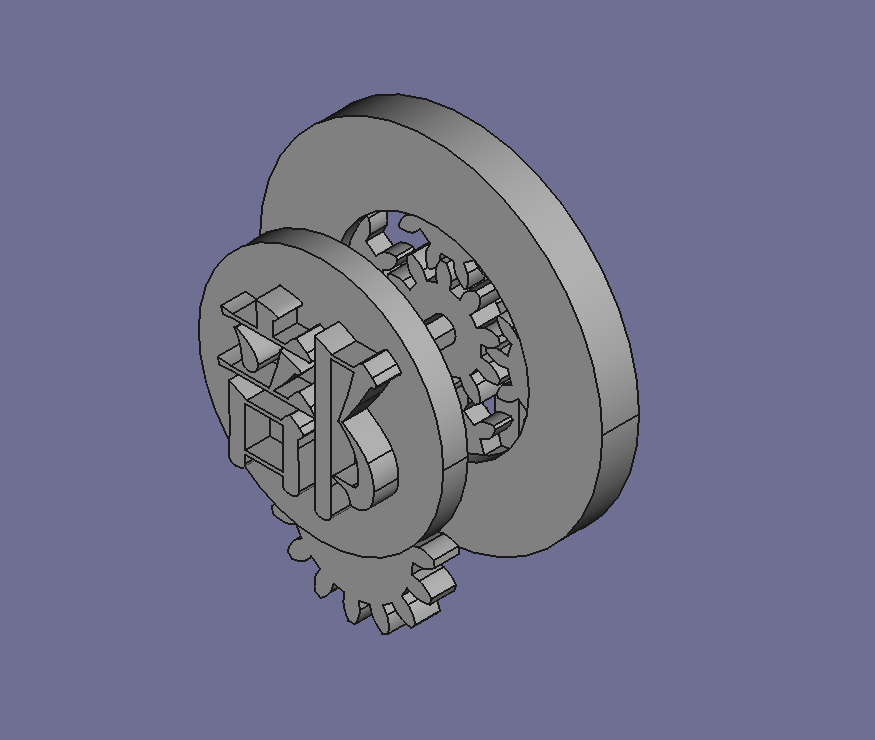
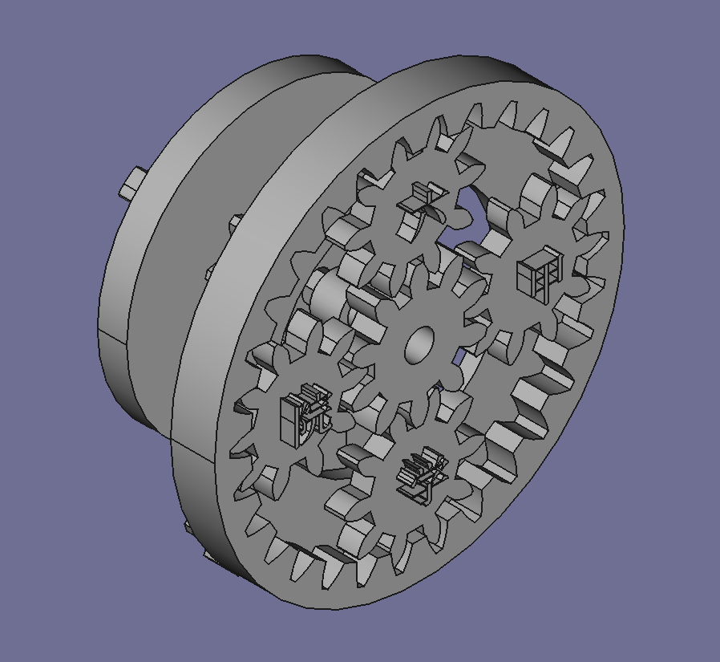
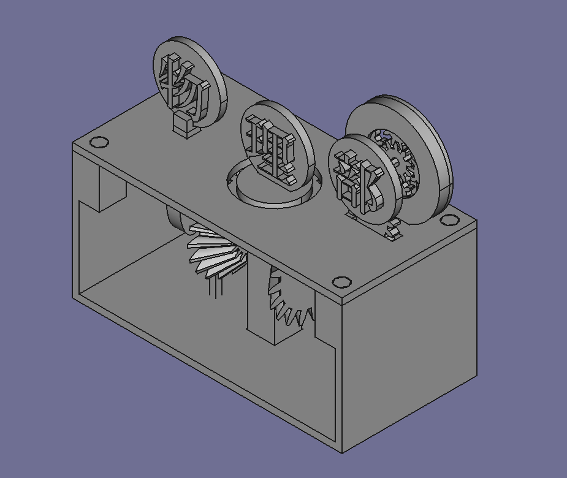

からくりおもちゃ
自己紹介
名前 : IR
物理部3Dプリンターの守護者です。
初めに
今回制作したのは、歯車を使用したからくりおもちゃです。
昨年制作したものから比較的精度が向上しています。
概要
製作過程
- 製作期間 数ヶ月ほど
- 製作人数 1人
- 精度 かなり良い(前回比)
右側についているハンドルを回すことで、上部にある「物理部」の3文字が回ります。
部誌制作時点では未定ですが、「六甲学院」の4文字も回るかもしれません。
そんな感じの代物です。
解説
先に一つ謝罪が必要なこととして、未だ調整が完了していないことがあります。
文化祭で展示のみとなっている可能性がありますので、どうがご了承ください。
そんな中、備忘録も兼ね解説を書き連ねて行こうと思います。
- ハンドルを回す
ここは動力となるだけなので省略します。 - 「物」の動き方
(図1)のカムというものによって上下します。
下の楕円形のものが回り、それによって高さが変わります。
ここが調整が難しい部分の一つです。
私の3Dデータ制作の腕が半端なためですね。

(図1) - 「理」の動き方
(図2)の傘歯車(ベベルギア)というものによって回転します。
下の2つが噛み合い、回転の方向がかわります。
上の歯車の方に「理」の文字がついています。
コマのような回転方向に回ります。
文化祭では、この傘歯車のミニチュア版も展示する予定です。

(図2) - 「部」の動き方
「理」と同じように傘歯車で回転方向を変えています。
(図3)で後ろに余分なものがついているように見えます。

(図3)
これは裏についている「六甲学院」を回すためです。 - 「六甲学院」の動き方
「六甲学院」の4文字は遊星歯車機構と言うもので回ります。
(図4)の中心の歯車が太陽歯車、一番外の歯車が内歯車、残りの4つを遊星歯車といいます。
詳しい仕組みをここで説明するのは難しいので、気になる方はご自身で調べてみてください。

(図4)
全体像はこんな感じです。

最後に
CADというちゃんとしたソフトを使用し制作できたのは、良い経験になったと思います。 しかし、制作計画がしっかりとできていなかったのは、反省するべき点だと感じています。来年には更にいいものを作ろうと思っているので、モチベーションを保ちつつ、努力したいと思います。
使用したツールと用途
FreeCAD 設計
FreeCAD: あなたのための 3D パラメトリック・モデラー
FreeCAD, the open source 3D parametric modeler
www.freecad.org

FlashPrint5 スライス
Adventurer3 3Dプリンター
参考にさせて頂いたサイト
からくりすとさん
からくりすと
からくりのまとめと研究と製作と。 手のひらサイズのからくり「TypeB」が9/15 20:00より発売です ▶︎パトロンさん募集中！▶︎ご要望・お問い合わせはContactよりお願いします。▶︎Twitterはこっち ▼ 機構 ▼ 100以
karakurist.jp

85th IR